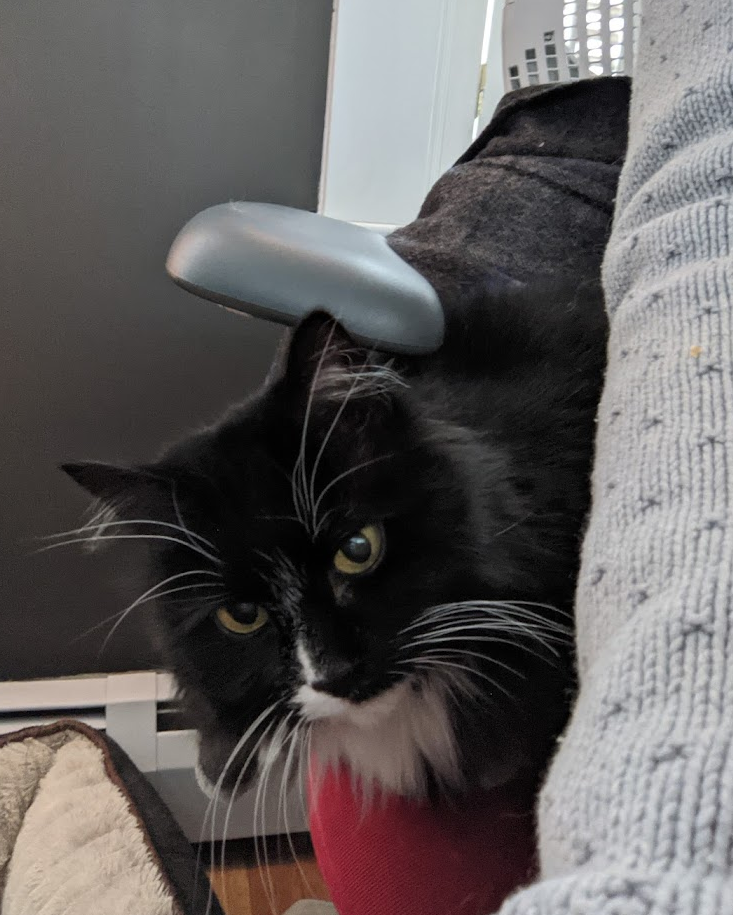
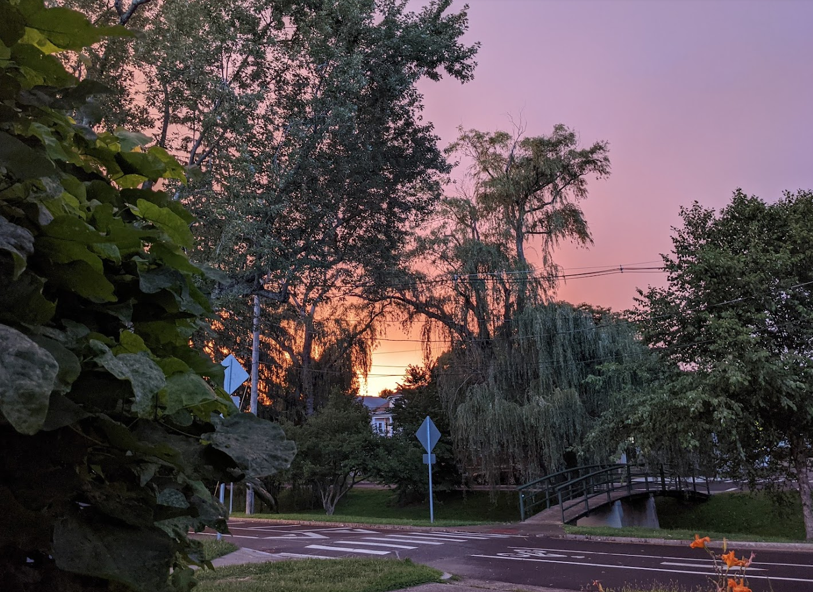

written on august 31st, 2021
hi everyone and thanks for taking the time to visit my website. my understanding of social media these days is that, well, it's all about self promotion. i tend to shirk this type of thing. nevertheless, i spoke with my partner mary (caitlyn) about how it's relatively common for those pursuing a PhD to have one, and i needed something to write about. she said write about the home renovations, so i guess that's what i'm going to do now.
we closed on a small house in the elmhurst neighborhood of providence, ri halloween of 2016. i remember it was halloween because we were not at all prepared for the onslaught of young people coming to our door. i think we ran out of candy in literally five minutes and had to turn off the lights/hide. below is the first picture i have of the house, a couple days after.

looking back at the pictures, apparently the first project we undertook was a good old fashioned basement demolition. when they build the house, there were a number of diaphragms installed to breakup the flow of the basement. more recently than the original construction (1930s), someone had built a workout room with drop ceiling, faux wood paneling, the whole nine yards. it didn't look too hot, to put in gently. no problem, we got rid of the lath & horse hair walls. beneath the surface of the workout room, there was some very precarious electric wiring and a small bit of water damage. goodbye jankiness!


the next target was what we now refer to as the mudroom. as a house ages, the soil beneath the foundation will move because of the water cycle. this will cause the foundation to move. at some point, the house settles, as did this one. when the inspector looked at the house, he commented on the wood beam running the length of the house and said that he's seen three family houses sitting on top of a piece of timber like that. good for us. it makes sense, too, because the neighborhood was predominantly constructed all around the same time, and designs were most likely pulled out of a sears catalog or something of that nature. the foundation guys probably poured a ton of them and then the framers just laid the same timber for every foundation. this is just conjecture, but what else am i to do seeing as i have not yet perfected my time machine.

so yes, the house settled and one byproduct of this was some nasty looking cracks in the plaster. i knew nothing of plastering prior to the purchase of this home, but i feel relatively confident with a taping knife these days. i cut out the plaster that was falling out, installed plaster buttons, and then spent probably too much time perfecting the tape job. taping as i refer to it is just applying progressively thinner coats of joint compound (mud) until you can't tell there was ever a crack there.

while that was going on, i got some help from my dad adding some critical electrical infrastructure. we added a couple of switches, a new light, but the major component was addition of an exhaust fan to the sole bathroom in the house. i don't remember what it was like before, but i'm glad i don't have to live that way anymore.

next up, we had a free tree (sponsored i believe by the city of providence) planted in the front yard. looking at pictures from before we owned the house, there was a big tree there but it fell down. sad.

the basement and mudroom projects happened pretty much in tandem, along with taking down a tree precariously placed right next to our house. it was a small juniper tree. the stump is still there if you want to see it.

next up was the double living room. both rooms needed a new coat of paint. for some reason, i chose a severe blue for the front room and a more moderate gray from the farther back room. just this past year, we actually went back & repainted the front room gray. it looks better, and i'll probably drop a picture later on down this post. the ceilings in both of these rooms were

aesthetically impacted by the house settling. we had the idea to install shiplap on the ceiling, as well as change the light fixtures out for different ones. the ceiling was a big project, but now as i sit in one of the very rooms it was installed in, i'm happy we spent the time and money to get it together.

what i perceive now as probably the most challenging part of the renovations was the removal of the flooring in the bathroom. it was some kind of stuck on linoleum. now that i think of it, the mud room actually had a similar linoleum-esque stuck on tile. when you pull the tile off, there are small staples stuck in the floor. there's no easy way to get those staples out except some good old fashioned time on your knees and a hand tool. i remember the bathroom took more than a day for a 10'x5' space and i was listening to the album 'skylight' by pinegrove on repeat (please don't cancel me).

after removing all of the nails, i replaced the sink, the toilet, the light fixtures, and added an outlet. the impetus for this entire project was that when one sat down to use the toilet, there was less than a foot of spacing between the sink and where you sat. the sink was gigantic for some reason. so it had to go. there was no outlet in there either, so using a non battery powered trimmer or any sort of bathroom appliance was out of the question. after that we painted, stained the floor and added a new medicine cabinet.

the last part of the project was something i used for the basis of a class project. i applied a systems engineering methodology to the project management, design, construction, and installation of a set of shelves. i don't think that the professor was all that impressed, but it gave me the opportunity to use some wood clamps i had bought on facebook along with the router caitlyn's dad gave me when they sold their place in portsmouth. i do not unfortunately have the wood shop or man cave of my dreams at this point. i would be grateful for even floors in the basement at this point. it is what it is and i've tried to make due with what i have.

looking at the pictures it seems like the next thing we did was install a raised bed made out of a reclaimed door. each raised bed is made of one door. one cut down the middle, then cut each piece in half. i think that's how it goes.

somewhere mixed in there, i performed repairs where necessary. the washer fill switch broke. the dryer belt broke. the most challenging repair was the tub. i had never used pipe dope before this project. i had used pipe tape when i installed the new sink in the bathroom though. that was a saga. i thought i did it correctly, but i remember waking up in the middle of the night hearing water running. i hadn't done the plumbing work correctly. i've gotten better with that type of work, but i'll sub it out if i have my choice.

that reminds me of something i probably missed, and it was a relatively big one. providence still has a lot of lead lines going to the houses. not the mains from the reservoir so much, but from the curbstop (where the main meets your house) to the house. providence water had a no interest loan thing, so i went for it. it's one of the silent improvements that i think is worth the expense.

the other upkeep project was replacing window panes. the windows are original wood, so they use glaze to insulation between the sash and the windows. i went back & forth about replacing the windows due to the propaganda about lead paint, but i ultimately to this point have chosen to keep the windows. we don't slide the windows up & down all that often as we use air conditioning, so i'm not too pressed about chipping paint. if someone gave me a great deal on wood windows, maybe i'd jump. to this point i've come across nothing but snake oil salespeople.

at some point, we painted the office a nice dark gray color. we painted the bedroom as well. those were all relatively small projects.


finishing up the interior, we set our sights on exterior projects. caitlyn found this app where you get paired up with tree service companies that are looking to get rid of their mulch, and they drop off a delivery for free. the only catch is that you can end up with a ton of mulch. like, way more than you need. she signed up, and within twenty-four hours had a delivery in our front yard. we didn't own a wheelbarrow at that point, so one of us was rolling a yard waste can, and the other one carrying a can front the front yard to the back.

that rounds up the work that we did predominantly ourselves, but not the end of the story. the fence was pretty beat when we moved in, and had devolved to a worse place over the duration of our time living here. we decided to go through an app and hire someone to do that work. they also took down a crummy shed we had.

the final and probably most apparent part of the renovation started with painting of the deck. just before the start of the summer, we got it in our heads to finally do something about the circus vibe the house had. yellow vinyl, green pink and white paint. it was painful to look at every time we got home. we planned to leave the vinyl because it was for the most part in good shape, but some pieces admittedly became brittle and cracked. we started prep work ourselves for the front porch, but realized it was more of a project than we wanted to take on ourselves. we hired someone who came out and did a first coat on the porch. at the end of the day, we went and looked at it and had the same reaction to when we painted the kitchen. the new coat of paint made the vinyl look much worse. the painter and i looked at what was underneath the vinyl siding. they seemed to think that what was underneath was good wood clapboard. we took a peek and it was not just good old wood but in mostly great shape. i told them to stop working because i wanted to take all of the siding off.
the next day, a hot saturday, caitlyn and i took down almost all of the vinyl siding that could be easily reached by a ladder without going near the electrical service wires or out on the roof. the siding looked great except for where blow-in insulation was installed. when the installers came out, they pulled off the vinyl siding but used a hole saw to drill through the wood. it still pains me to think about. no big deal, i called up a lumber company and got new cedar clapboard. i installed the wood myself without a problem, even the odd angled connection points at the edges of the house. i'm still proud of those cuts!

we called up the electrical company and had them turn the power off. that allowed me to get up near the wires and take the rest of the siding down. the same day i did that work, i went up on the roof to remove the siding around this little bump-out in the attic. i think i must either be afraid of heights, working on a ladder, falling, or just have a strong sense of self-preservation. or maybe it's just that the pitch of the roof is too severe. whatever it was, being up on the roof pulling off siding was a scary but enlightening moment for me. i had mentioned to caitlyn that i wanted to put shingles on the bump out as kind of an accent. i wanted to do the same for the upper rear of the house as well, near the eaves. when we removed the siding from the bump out, it turned out that there were in fact shingles! this confirmed my idea, and it also made me realize that i was going to need to call for help. i ended up hiring a contractor out of newport who had a couple free weeks. he and a small crew prepped, removed the old shingles, installed new shingles, added new trim around the windows, and painted the entire house. we think it looks great.

that brings us up to today. yesterday we finally got another load of mulch. it was mu(l)ch more than the first go around. haha, that was a landscaping joke. laugh with me please...

we have been tossing around the idea of an hvac system. big picture, we've considered remodeling the basement or adding a second floor. installing air conditioners every year is a pain and they're ugly. both projects are larger ticket projects. we've also considered to. smaller picture, we'd like to change out the backyard lights and add an outdoor outlet in the front. we'd like a fancy doorbell, too. maybe soon!

that pretty much wraps things up here. i should mention that aside from caitlyn and maxwell (the dog), we added a cat (margot) and another dog (millie) to the squad. we have fun. if you made it this far and you aren't a family member, thanks. i hope it wasn't too painful. idk if i'll go back and check for typos. i wrote this in text edit and now i have to go format it for a website. i've been trying to figure out how to host my own blog using open source software. i want to use a specific infrastructure but i'm running into a brick wall. hope all is well with you wherever you are.
